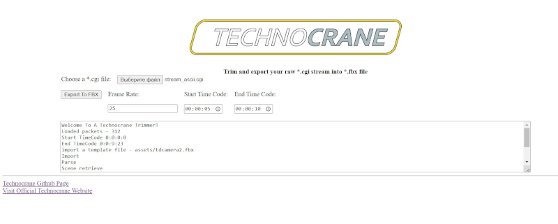

Trimmer Service - Home Page
Technocrane trimmer is a service that converts raw stream information (*.cgi) into fbx files. Its main feature is the ability to export a defined range of time to fbx. This allows for the splitting of large daily streams into smaller fbx files, which can be imported into DCC applications like Maya, MotionBuilder, and Unreal Engine for further processing. The service can be particularly helpful for importing camera animations longer than 2 minutes into Unreal Engine, which can be a challenge without splitting the animation into smaller parts.

To begin, select a stream *.cgi file. Once the file is successfully read, you will receive information about the number of packets and the start and end timecode of the stream data.
The next step is to define the frame rate of the data and the start and end timecodes of the output fbx animation. Time code is defined in a format "Hours : Minutes : Seconds"
💡 If you leave these values as zeros, the entire duration of the raw stream will be exported.
When you press "Export to FBX," the trim and conversion operation will be executed, and the output file will be downloaded in your browser.
Rotation Order - ZXY
Post rotation 0; 90; 0 in Euler angles
TimeCode is presented in a several properties
Official Technocrane Website - https://www.supertechno.com/
Github home page for Technocrane - https://github.com/technocranes
Discord channel with support groups - https://discord.com/invite/qw7QxSR
Sergei <Neill3d> Solokhin 2023, specially for Technocrane r.s.o.